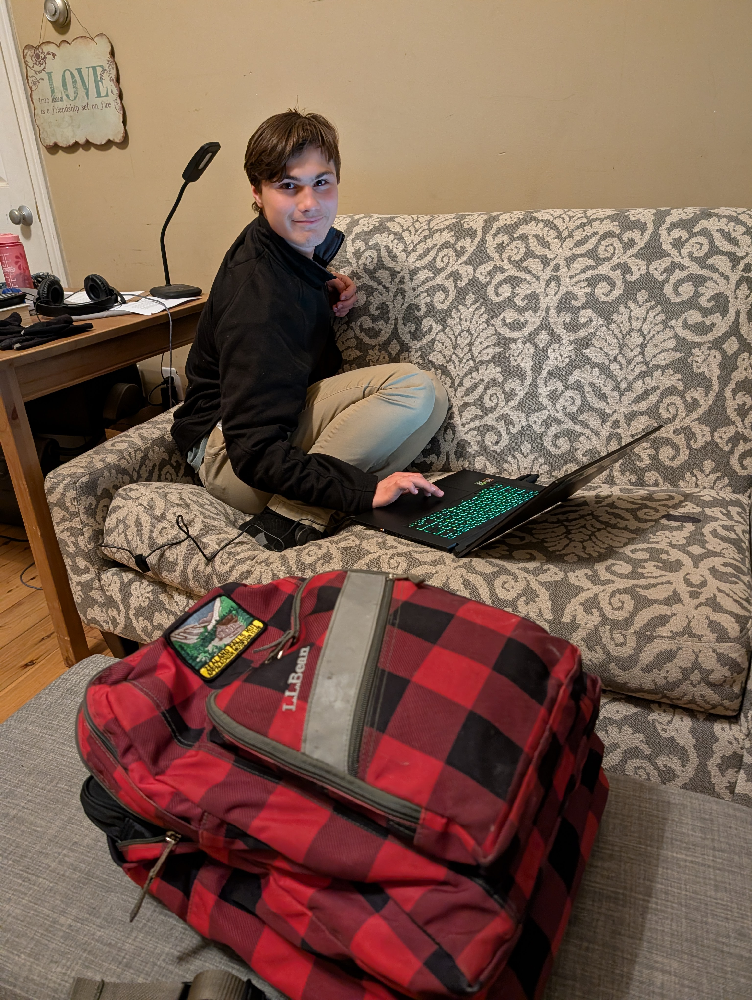
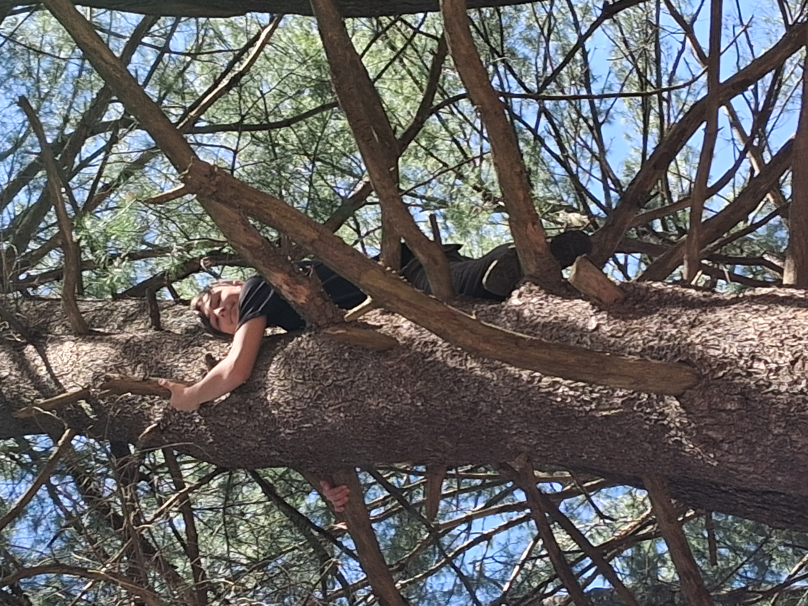

Back to Top
Hello! My name is Jeremiah Trust Hunter, and I am currently seventeen years old. I am a junior in high school, coming here thanks to the early college program. The stuff I am learning here (especially in this class) is so interesting, and I am having a lot of fun learning things! Before this, I have been homeschooled for my entire life until now, and that has definitely paid off. I am a Christian, and I believe that God created the world, and that Jesus died for my sins so I can live with Him forever. I am very energetic, and I love physical outdoor activities, as well as chilling as watching movies when I am less energetic.

